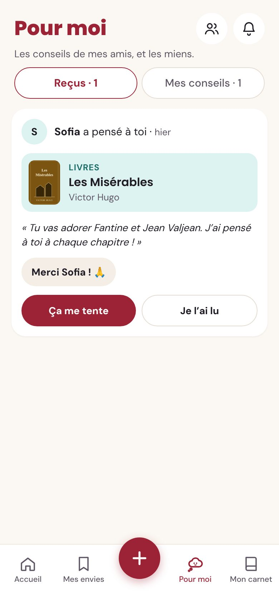
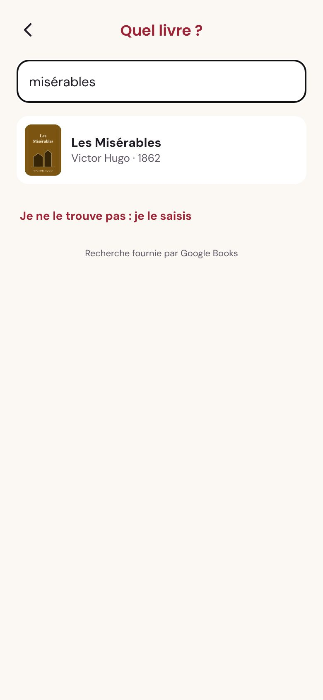
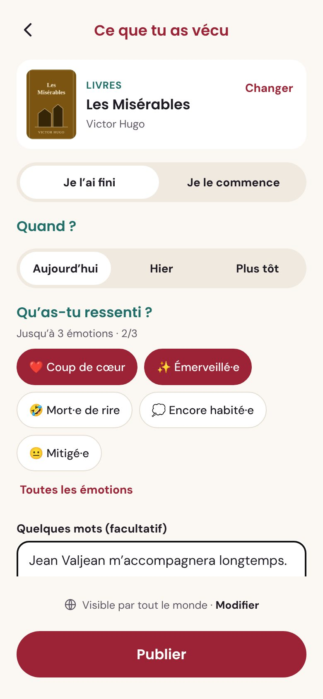
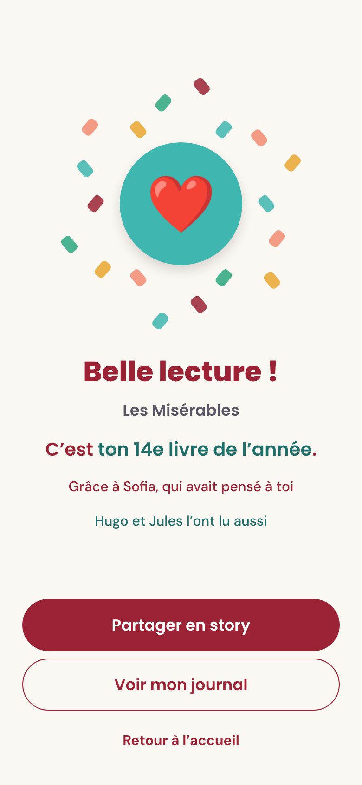
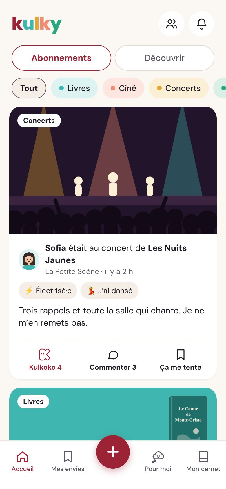
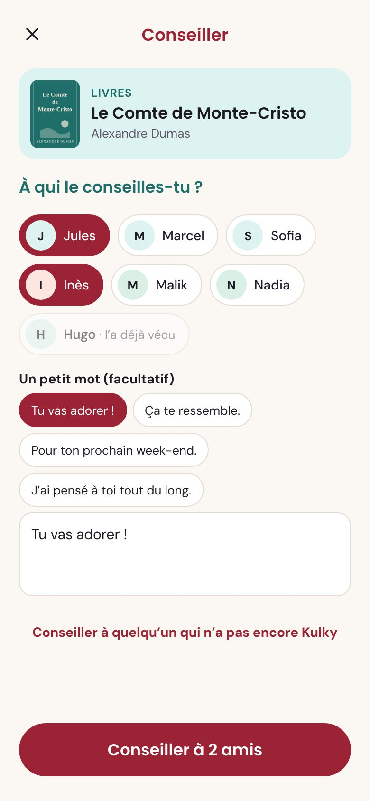

1
Sofia pense à Léa
Sofia vient de finir Les Misérables et pense tout de suite à Léa. Elle le lui conseille, avec un petit mot. Le conseil arrive dans « Pour moi ».
« Sofia a pensé à toi »Un mot, pas une note

Vis-le, enregistre-le, partage-le. Kulky garde la trace de ce que tu lis, vois et écoutes, et le fait voyager jusqu’à ceux que tu aimes.
L’histoire de Léa et d’un livre que son amie Sofia lui a conseillé. Fais défiler.
Sofia vient de finir Les Misérables et pense tout de suite à Léa. Elle le lui conseille, avec un petit mot. Le conseil arrive dans « Pour moi ».

Trois semaines plus tard, c’est fini. Elle tape deux lettres : Kulky retrouve le livre, sa couverture et son nombre de pages.

Pas d’étoiles : Léa choisit jusqu’à trois émotions parmi vingt-sept, et ajoute quelques mots si elle veut. Trente secondes, pas plus.

Chaque lecture mérite d’être célébrée. C’est son 14e livre de l’année, grâce à Sofia. Et Hugo et Jules l’ont lu aussi : ce sont les croisés.

Kulky prépare une jolie carte aux couleurs de l’univers, prête à partager sur Instagram ou WhatsApp.

Dans le fil, Léa voit ce que vivent ses amis : un concert, une expo, un vieux film. Un Kulkoko pour applaudir, un commentaire, « Ça me tente » pour s’en souvenir.

Léa pense à Jules et Inès. Elle leur conseille le livre à son tour. Sofia pourra voir jusqu’où son conseil a voyagé.


Tu es qui, toi ?
Je suis un Kulkoko !
Un quoi ?
Un K qui applaudit. Quand ton amie finit un livre ou sort d’un concert, tu m’envoies, et je file l’applaudir de ta part.
Comme un « j’aime » ?
En mieux : je danse. Pas de pouce, pas de cœur, juste un bravo. Comme les encouragements sur une course, mais pour la culture.
Des idées pensées pour que la culture circule entre les gens.
Tu conseilles un livre à Sofia, elle le passe à Hugo, qui le passe à Marcel. Kulky te montre jusqu’où ton conseil a voyagé.
Quand un ami vit la même œuvre que toi, Kulky vous le signale. De quoi lancer la conversation.
Tes amis laissent un mot à une page précise. Tu le découvres seulement quand tu y arrives.
Ton mois le plus culturel, tes coups de cœur, les découvertes faites grâce à tes amis. À partager en fin d’année.
Les sportifs ont leurs applis pour partager leurs sorties, s’encourager et garder la trace de leurs progrès. Pour la culture, chacun note dans son coin, sur une appli pour les livres, une autre pour les films… et rien pour les concerts ni les expos.
Kulky est né d’une envie simple : faire pour la culture ce que ces applis ont fait pour le sport. Tout réunir au même endroit, et surtout le vivre avec ses amis.
Kulky est imaginé et développé à Toulouse, par une fondatrice autodidacte qui a appris à construire une appli en la construisant.
Kulky est gratuit. Crée ton compte en moins d’une minute, et invite tes amis.
Créer mon Kulky

 « La scène de l’évêque… »
« La scène de l’évêque… » « Attends le chapitre des égouts ! »
« Attends le chapitre des égouts ! »